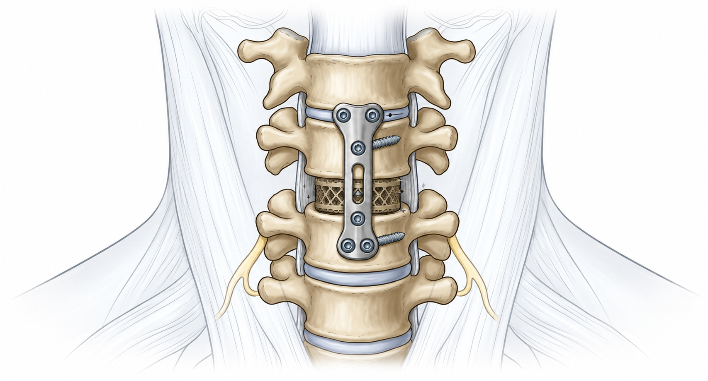

Anterior Cervical Discectomy & Fusion (ACDF)
A well-established surgical procedure that removes a damaged cervical disc and fuses the adjacent vertebrae together for stability. Chosen when fusion is the best option to relieve pain or prevent spinal cord compression.

What is ACDF?
Anterior Cervical Discectomy and Fusion (ACDF) is a surgical procedure that removes a damaged cervical disc and fuses the two adjacent vertebrae together using a bone graft and plate, creating a solid structural bridge.
How It Works
Rather than replacing the disc with a moving implant, fusion eliminates motion at that level by creating a bridge of bone between the two vertebrae. This trades motion for immediate stability and is often the best choice for specific conditions.
When ACDF is Indicated
- Severe disc herniation with cord compression
- Significant spinal instability
- Advanced facet joint arthritis
- Multi-level disease where stability is paramount
- Failed conservative treatment with ongoing myelopathy
Patient Considerations
- Good health for operative intervention
- Symptom relief often immediate due to decompression
- Fusion time varies, typically 3–6 months
- Small risk of adjacent-level degeneration over time
Surgical Approach & Anatomy
ACDF uses a proven anterior approach that safely accesses the cervical spine with minimal damage to surrounding structures.
The Anterior Approach
Your surgeon approaches the cervical spine from the front of the neck, following natural anatomical planes to minimize trauma to muscle and nerve tissue.
Key Anatomical Features
- Incision location — along a natural skin crease on the front of the neck for optimal healing and cosmetic appearance
- Safe dissection plane — splits between the midline (trachea, esophagus) and lateral neurovascular structures (carotid sheath)
- Direct access — provides excellent visualization of the damaged disc and decompression site
- Muscle preservation — posterior neck muscles remain undisturbed, aiding faster recovery
The ACDF Surgical Procedure
The procedure follows a systematic approach to safely remove the disc, decompress nerves, and establish fusion.
-
Anterior exposure
A small incision is made along a natural crease on the front of the neck. The surgeon carefully separates tissue planes to expose the damaged intervertebral disc while protecting the trachea, esophagus, and carotid vessels.
-
Disc removal and decompression
The entire damaged disc is removed down to the posterior longitudinal ligament. Bone spurs (osteophytes) compressing the spinal cord or nerve roots are carefully removed using specialized instruments. This decompression often provides immediate pain relief.
-
Interbody cage placement
A fusion cage or bone graft is placed in the empty disc space to restore the normal disc height and support the vertebrae. This prepares the space for bone to grow and fuse the two levels together.
-
Anterior plate fixation
A titanium plate is screwed across the front of the adjacent vertebral bodies. This plate holds the vertebrae firmly in place and maintains alignment while bone fusion naturally occurs over weeks to months.
-
Closure and fusion healing
The incision is closed. Over the following months, bone grows within the cage and across the fusion site, creating a solid bridge between the two vertebrae. This process provides long-term stability.
Benefits of Fusion
ACDF offers proven stability and decompression, particularly valuable in specific spinal conditions.
Immediate Advantages
- Direct and immediate decompression of nerves
- Rapid stabilization at the operated level
- Prevents abnormal motion at the damaged disc site
- Well-established long-term outcomes
Long-term Considerations
- Permanent fusion eliminates motion at that level
- Adjacent levels must bear slightly increased load over time
- Small risk of adjacent-level degeneration in the future
- Fusion rate typically 90%+ with modern techniques
Fusion is the gold standard for severe instability. When spinal stability is the primary goal, ACDF remains one of the most predictable and reliable surgical solutions available.
Common Questions
Questions patients often ask about cervical fusion.
How is ACDF different from artificial disc replacement?+
ACDF removes the disc and fuses the vertebrae solid with a cage and plate, eliminating motion. Artificial disc replacement removes the disc but replaces it with an implant that preserves motion. Your surgeon will recommend ACDF when fusion is more appropriate for your condition, such as when there is severe instability or advanced arthritis.
Will I have pain relief right after surgery?+
Many patients experience significant pain relief immediately after the decompression portion of the surgery. However, full benefit including complete symptom resolution may take weeks to months as inflammation subsides and the fusion strengthens.
How long does it take to fuse?+
Fusion typically occurs over 3–6 months. A cervical collar is worn for 6–12 weeks to protect the fusion site. Your surgeon will use X-rays or CT scans at follow-up visits to confirm bone growth and fusion progress.
Will I lose neck mobility?+
The fused level will have no motion. However, the other cervical levels and the thoracic spine can compensate, and most patients retain functional neck movement. Your physiotherapist will help maximize motion in the remaining segments.
What is the risk of adjacent-level disease?+
Over 10–20 years, there is a small risk that discs adjacent to the fused level may develop problems. This is partly due to increased stress at those levels, though not all patients experience this. Regular follow-up helps monitor for any changes.
Ready to learn more?
Talk to your surgeon about whether ACDF is the best choice for your specific condition.